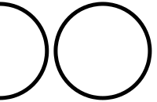

Johannes Schmidt
This would be a more modern look for a portfolio. Here I (almost) entirely relied on pre-designed templates. Looks decent, but not my style though ;)

Computer Science Student based in Germany
This would be a more modern look for a portfolio. Here I (almost) entirely relied on pre-designed templates. Looks decent, but not my style though ;)
Employed as a working student. System administrator at the Institute for Numerical Simulation. Previously I worked there as a research assistant.
Studying Computer Science since April 2019. Did my Bachelor's program in physics and switched to Computer Science for the Master's program.
German native speaker. Fluent in Russian through my family. Professional work and my studies helped a lot in reaching a mostly native English speaker level.
foreman, docker, bash, python, ansible, amanda, zimbra, (mostly) Dell hardware, nginx
Pytorch, Tensorflow, RDKit, sonent, graph nets
Additionaly I did 30 CP in Master courses in physics. Mostly in theoretical physics.
The only thing missing is the thesis.
Too much to tell it here
Don't hestitate to say hi!